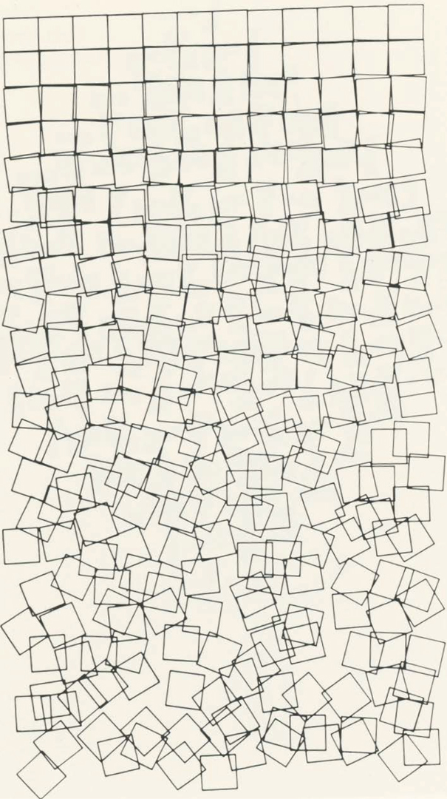

Generative Code
Introduction // Brief History
Imagine an artwork that is created with minimal influence of the human hand, something that flows naturally and follows a given set of rules and paths. This is how generative art works. The artist creates a system of that will decide properties of the artwork, trying to take away some of the control away from the artist. Generative art has been around for quite some time, but it really began to flourish around the late 50’s with the use of new computational technology. However, Generative Art is not just created using software, it is also created through music, traditional, and analog video. For time’s sake, in this essay it will focus on coding aspect of Generative Art.
Some of the early pioneers of Generative Art include artists such as Georg Nees, John Whitney, and Vera Molnar. Georg Nees was one of the first artists to show and exhibition of Generative Art, titled Computer Graphik. These works were created by a computer controlling a milling machine. Later he would incorporate a flatbed plotter to create his work.

"Schotter (gravel)" Georg Nees, 1968
John Whiney, took a more animated approach to creating Generative Art. Using a camera, he be built named the magic machine along with a analog computer Whitney created animated graphics. This work titled “Catalog” was created in 1961 inspiring artists to think of new ways to utilize new technology to create stunning visuals.
"Stills from Catalog" John Whitney, 1961
One last pioneer to discuss is Vera Molnar, founder of multiple groups researching using computing to create art. Her early works involve Generative Code and a plotter machine. Molnar was an essential key figure in early Generative Code thanks to her research and continuous effort to push the boundaries of creative coding.
"Untitled" Vera Molnar, 1985
Flow Through Code
The work displayed to the right is Generative Art piece titled "flow" that is utilizing a software called p5.js. This piece uses a combination of a random number generator, perlin noise, and particle effects. The random number generator takes away the control from the artist, creating unpredictable paths for the particles to flow to. But to smooth out the randomness, perlin noises is added into the code. Perlin noise is an algorithm that is used to smooth out the randomness, creating a more organic flowing effect for the particles.
Now, this is code is done to convey an organic meditative work. The viewer doesn’t see cold and ridged software that they’re used to seeing. The work creates its own journey as the viewer continues to observe it, encouraging them to take a moment and relax. Allowing to the think about how the nature of code is somewhat related to the nature of the natural world. We are all born with a set of rules, or algorithm if you will, but it’s up to each individual to interpret those rules into their own story. Much like Generative code does.
Loose Ends
Through Generative Art/code the artist seeks to express their thoughts and ideas through a medium that is ordinarily seen as a tool that is not meant for stunning visual output. However, as you can see software can have an impact when it comes to creating aesthetically and conceptually compelling works. It’s important for artists to continue to explore the way they can use and adapt to using Generative Code. It helps the viewer understand how we can use code to better our world not only technically, but aesthetically.
"Flow" Lacey Nein, 2019